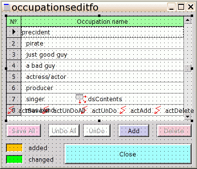
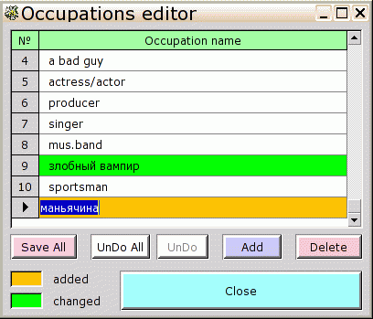

Создаем новую форму :
File -> New -> Form -> Simple Form ->
На запрос имени файла - вводим "occupationseditform" и подтверждаем -> автоматически создается форма :
"occupationseditfo"
procedure toccupationseditfo.occupationseditfocreated(
const sender: TObject);
begin
application.createdatamodule(trefsdatamo, refsdatamo);
commonrefseditfo1.dsContents.dataset := grdOccupations.datasource.dataset;
end;
procedure toccupationseditfo.occupationseditfodestroyed(
const sender: TObject);
begin
refsdatamo.free;
end;
Не забудем включить в "uses" секцию "implementation" файла "occupationseditform.pas" модуль "refsdatamodule" :
implementation
uses
occupationseditform_mfm,
// предоставляет тип "trefsdatamo" и объект "refsdatamo"
refsdatamodule
;
Переключаемся на отображение формы "refsdatamo" и выбираем "qryOccupations" :
Вновь возращаемся на форму "occupationseditfo" ( выбрав файл "occupationseditform.pas", и далее, если необходимо - нажав "F12" ).
Щелкнув на форме правой кнопкой, открыть меню, и, командой "Insert submodule" - вставить в форму субмодуль "commonrefseditform" . При необходимости - подогнать размер, чтобы исчезли полосы прокрутки.
Уронить на "occupationseditfo" компонент DB -> tdbwidgetgrid, и установить для него место и размер как у "planetseditfo -> grdPlanets" :
name := grdOccupations
procedure toccupationseditfo.grdoccupationsupdaterowdata(
const sender: tcustomgrid;
const arow: Integer; const adataset: TDataSet);
begin
case adataset.updatestatus of
usInserted: sender.rowcolorstate[arow]:= 0;
usModified: sender.rowcolorstate[arow]:= 1;
else
sender.rowcolorstate[arow]:= 255;
end;
end;
и не забудьте добавить нужные "unit" -ы в секцию "interface -> uses" :
interface
uses
msegui,mseclasses,mseforms,commonrefseditform,msedbedit,
msegrids,
db
;
Теперь создадим и опишем столбцы "grdOccupations", подлежащие просмотру и редактированию.
Уронить на "grdOccupations" компонент DB -> tdbstringedit :
name:= seFeature
Настроить появившийся столбец таблицы
grdOccupations :
Осталось сделать вызов "occupationseditfo" через главное меню программы.
Переключиться на дизайн "mainfo" ( файл "main.pas" ).
Уронить в любом незарисованном месте "mainfo" компонент "GUI -> taction" :
Name:= actOccupationsEdit
procedure tmainfo.occupationseditexecute(const sender: TObject);
begin
try
application.createform(toccupationseditfo, occupationseditfo);
if occupationseditfo.show(true) = mr_windowclosed then begin
qryPersons.active:= true;
end;
finally
occupationseditfo.free;
end;
end;Не забудьте добавить ссылку на файл "occupationseditform" в секцию "interface" файла "main.pas" :
interface
uses
msegui,mseclasses,mseforms,msepqconnection,msesqldb,msedb,
msedbedit,mseactions,msesimplewidgets,msemenus,db,msegrids,
planetseditform,
continentseditform,
countrieseditform,
featureseditform,
occupationseditform
;
Настроить вызов "actOccupationsEdit" из основного меню формы приложения ( mainfo ):
mnuMain :
Финальный вид формы редактора списка профессий :
в дизайне :

и во время работы программы:

Данный ( черты характера -> occupationseditform ) справочник - почти полный аналог вышерассмотренного справочника планет.